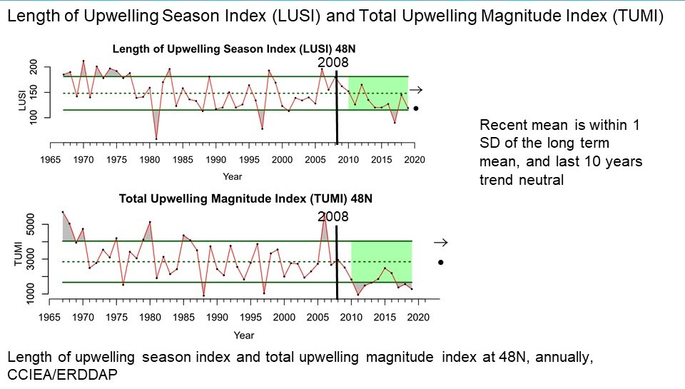
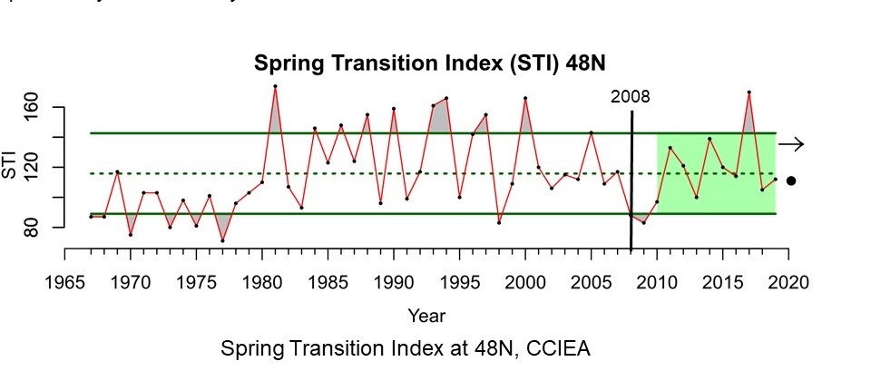

Trends - LUSI & TUMI
 Length of Upwelling Season Index (LUSI) and Total Upwelling Magnitude Index (TUMI) at 48 °N. Black dots (●) indicate that recent means for the last 10 years are within 1 standard deviation of the long-term mean. During the last 10 years, the trend has not changed (indicated by arrow →). The dashed lines are the long-term means and solid horizontal lines are ±1 standard deviation. The vertical black line indicates the year of the last condition report (2008). An explanation of index values (y-axis) and associated caveats are provided in Schwing et al. (1996). Image: IEA, 2020.
Trends - NPGO
 Monthly North Pacific Gyre Oscillation (NPGO) index. NPGO indicates sea surface height, signaling changes in ocean circulation that affect source waters. Positive NPGO values are associated with increased equatorward flow; higher surface salinities, nutrients, and chlorophyll; and higher productivity. Negative values are associated with less productive conditions. The black dot (●) indicates that the recent mean (last 10 years) was within 1 standard deviation of the long-term mean, and there was a decreasing trend (indicated by arrow ↘) for the last 10 years. The dashed green line is the long-term mean and solid green lines are ±1 standard deviation. Image: IEA, 2020.
Monthly North Pacific Gyre Oscillation (NPGO) index. NPGO indicates sea surface height, signaling changes in ocean circulation that affect source waters. Positive NPGO values are associated with increased equatorward flow; higher surface salinities, nutrients, and chlorophyll; and higher productivity. Negative values are associated with less productive conditions. The black dot (●) indicates that the recent mean (last 10 years) was within 1 standard deviation of the long-term mean, and there was a decreasing trend (indicated by arrow ↘) for the last 10 years. The dashed green line is the long-term mean and solid green lines are ±1 standard deviation. Image: IEA, 2020.
Trends - ONI
 Monthly Oceanographic Nino Index (ONI) from 1950-2020. The ONI describes equatorial conditions related to the El Niño Southern Oscillation; a positive value reflects El Niño conditions with generally lower primary productivity, weaker upwelling, poleward transport of equatorial waters and species, and more storms in the southern portion of the California Current. A negative value indicates La Niña conditions, with generally higher productivity. The black dot (●) indicates that the recent mean (last 10 years) was within 1 standard deviation of the long-term mean, and there was an increasing trend (indicated by arrow ↗) for the last 10 years. The dashed green line is the long-term mean and solid green lines are ±1 standard deviation. Image: IEA, 2020.
Monthly Oceanographic Nino Index (ONI) from 1950-2020. The ONI describes equatorial conditions related to the El Niño Southern Oscillation; a positive value reflects El Niño conditions with generally lower primary productivity, weaker upwelling, poleward transport of equatorial waters and species, and more storms in the southern portion of the California Current. A negative value indicates La Niña conditions, with generally higher productivity. The black dot (●) indicates that the recent mean (last 10 years) was within 1 standard deviation of the long-term mean, and there was an increasing trend (indicated by arrow ↗) for the last 10 years. The dashed green line is the long-term mean and solid green lines are ±1 standard deviation. Image: IEA, 2020.
Trends - PDO
 Monthly Pacific Decadal Oscillation (PDO) index. The PDO describes sea surface temperature anomalies in the Northeast Pacific. Positive PDO values are associated with warmer waters and lower productivity, while negative PDO values indicate cooler waters and higher productivity. The vertical black line indicates the year of the last condition report (2008). The black dot (●) indicates that the recent mean (last 10 years) was within 1 standard deviation of the long-term mean, and there was an increasing trend (indicated by arrow ↗) for the last 10 years. The dashed green line is the long-term mean and solid green lines are ±1 standard deviation. Image: IEA, 2020.
Monthly Pacific Decadal Oscillation (PDO) index. The PDO describes sea surface temperature anomalies in the Northeast Pacific. Positive PDO values are associated with warmer waters and lower productivity, while negative PDO values indicate cooler waters and higher productivity. The vertical black line indicates the year of the last condition report (2008). The black dot (●) indicates that the recent mean (last 10 years) was within 1 standard deviation of the long-term mean, and there was an increasing trend (indicated by arrow ↗) for the last 10 years. The dashed green line is the long-term mean and solid green lines are ±1 standard deviation. Image: IEA, 2020.
Trends - STI
 Spring Transition Index (STI) at 48 °N from 1967 to 2019. The black dot (●) indicates that the recent mean (last 10 years) was within 1 standard deviation of the long-term mean. During the last 10 years, the trend has not changed (indicated by arrow →). The dashed line is the long-term mean and solid horizontal lines are ±1 standard deviation. The vertical black line indicates the year of the last condition report (2008). An explanation of index values (y-axis) and associated caveats are provided in Schwing et al. (1996). Image: IEA, 2020.